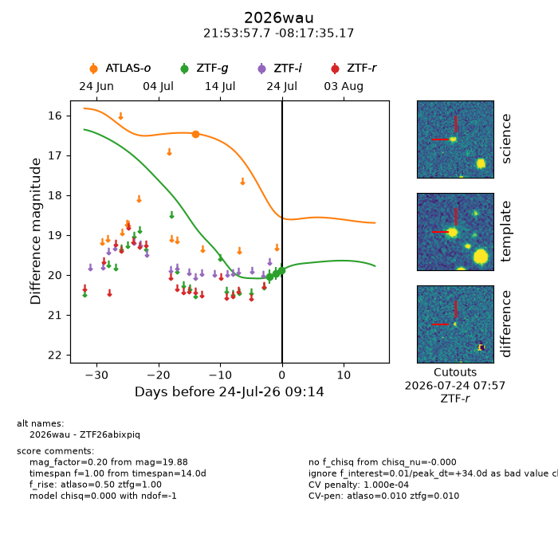
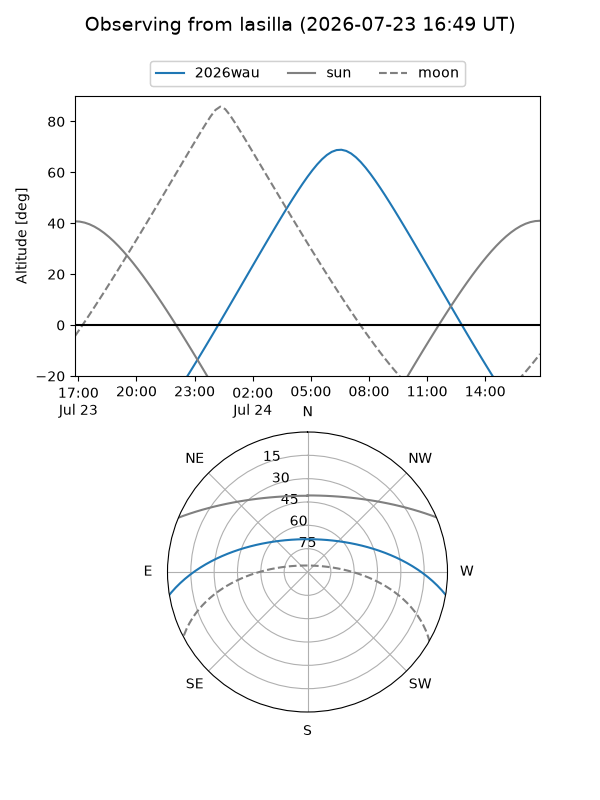
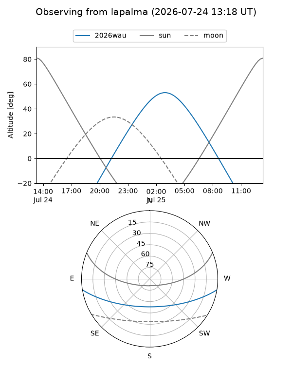
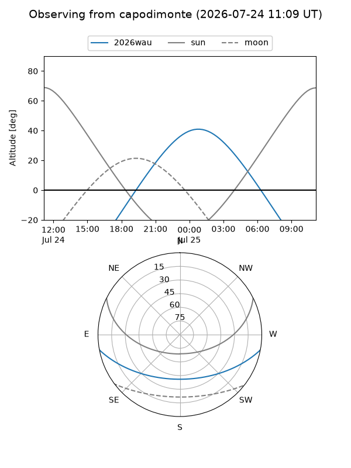
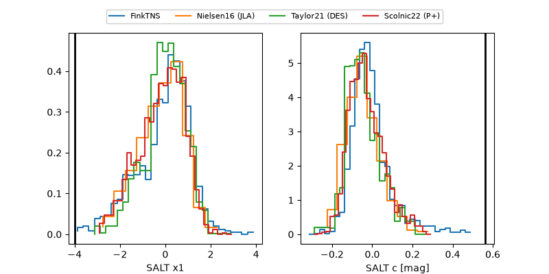

2026wau
Target 2026wau at 2026-07-24 09:16
Aliases and brokers:
FINK-ZTF: ztf.fink-portal.org/ZTF26abixpiq
Lasair-ZTF: lasair-ztf.lsst.ac.uk/objects/ZTF26abixpiq
ALeRCE-ZTF: alerce.online/object/ZTF26abixpiq
YSE-PZ: ziggy.ucolick.org/yse/transient_detail/2026wau
TNS name: wis-tns.org/object/2026wau
Direct TNS query: direct search
alt names
ZTF26abixpiq (ztf,fink_ztf)
2026wau (tns,yse)
Coordinates:
equatorial (ra, dec) = 328.4904,-8.29310
equatorial (HMS+DMS) = 21:53:57.70,-08:17:35.17
galactic (l, b) = (48.6074,-44.05316)
Flags:
TNS type: nan
peak dt: +34.0
likely cv: !!
Photometry:
last atlaso=16.46, ztfg=19.88
1 atlaso, 3 ztfg detections
Lightcurve

Visibility



Additional plots
